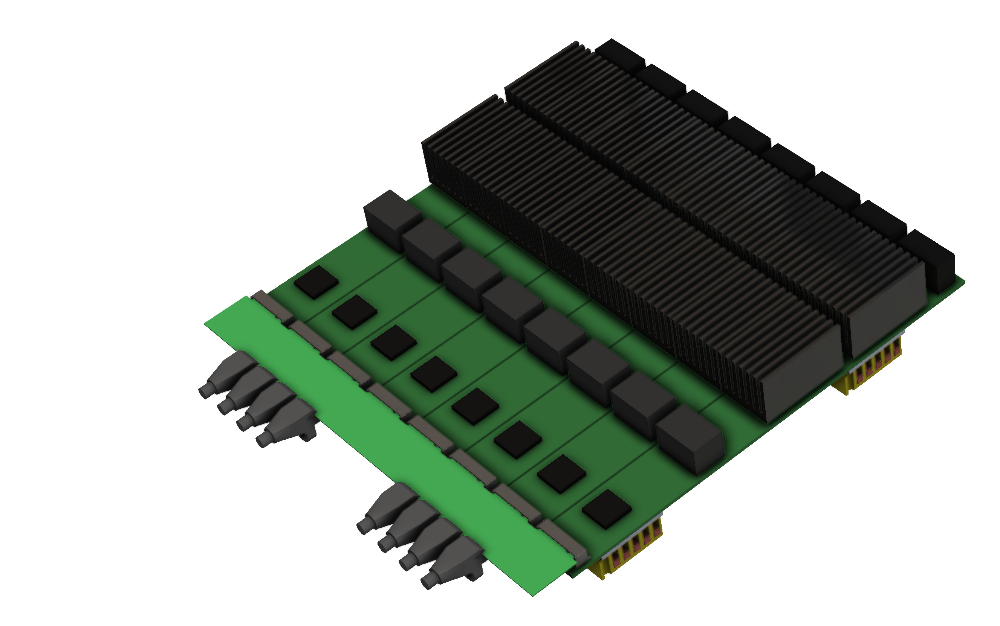
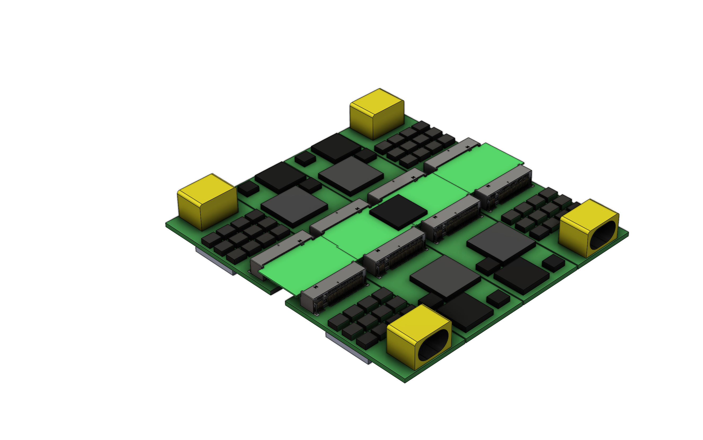
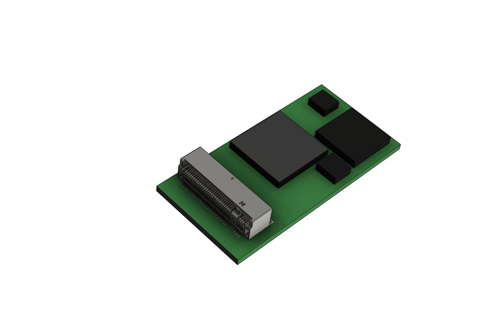
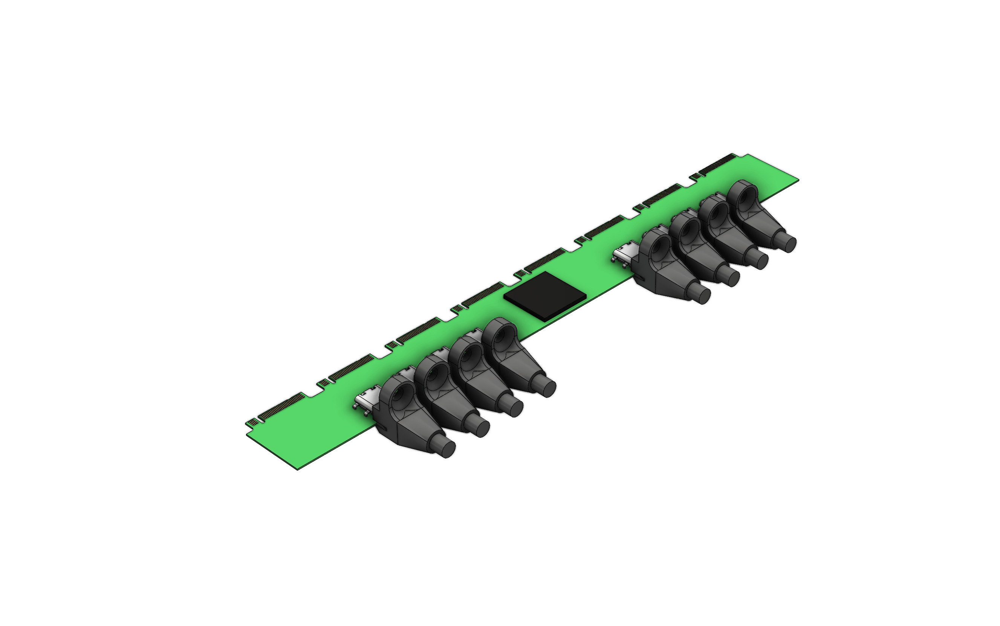
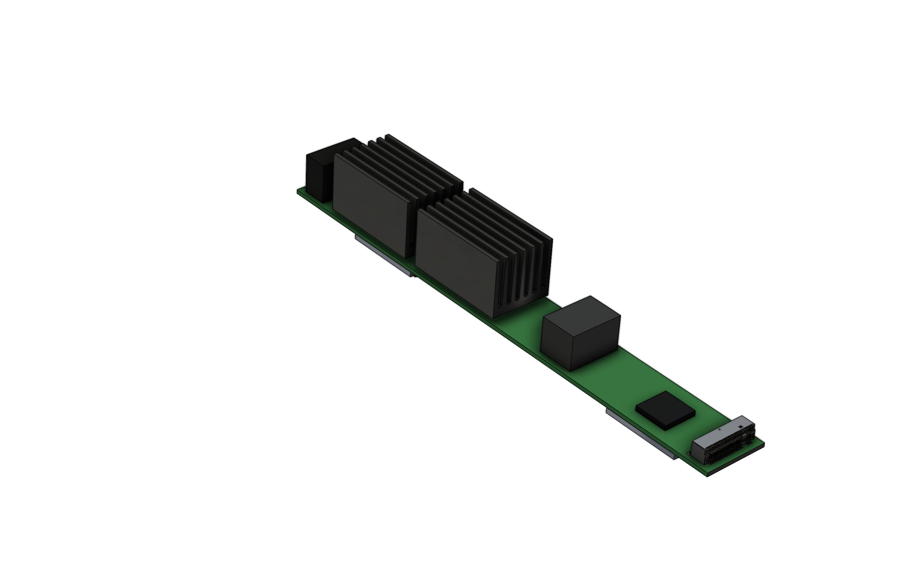
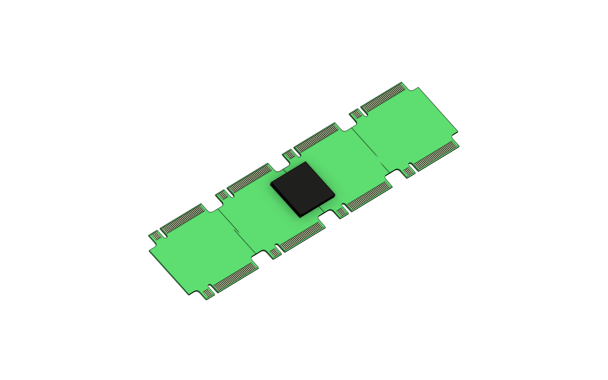
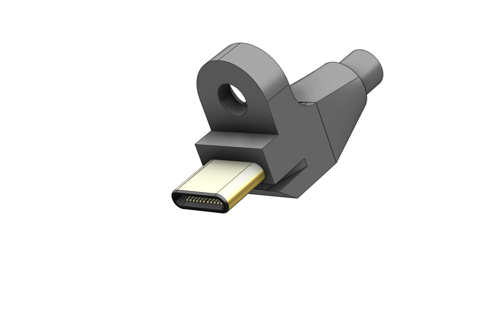

Team
About
Structure
Technology
Robotization - the displacement of people from the production process, with their replacement by industrial robots.


Basic stages:
- Low power movement, up to 100 watts (main target: FDM 3D printers)
- High-performance modules (main target: SLS 3D printers)
- Autonomus power management (accumulators controller, changers) -
- Autonomous robotics drones (main target: robots and drones)
- Medium power movement, up to 1000 watts (small power machines, low-power industrial robots)
- High power movement, up to 10000 watts (high-power machines, powerful industrial robots)
- Laser systems, up to 10000 watts - 16m
- Data processing (industrial systems for data processing ) -
- Data transmission (industrial systems for data transmission, wires and whireless)
- Generator controllers (industrial systems for data transmission, wires and whireless)





Low power movement, up to 100 watts (main target: FDM 3D printers)
PCBs
- Low-cost Hub (PCB)
- 24-5V Converter
- 5-3.3V Converter
- Power Relay 24
- STM32 Arm Core
- Ethernet Interface Module
- Stepper Driver
- Thermal Sensor Controller
- End Sensor Magnet
- Optical Sensor Controller
Engineering
- IUSB (Engineering)
- PCB-based Power Delivery
Advantages
- 3D Printers
- 3D Printer Clusters
- Low-Power Automation
High-performance modules (main target: SLS 3D printers)
Pcbs
- Power Arm Core (arm+ddr)
- LCD Driver
- Stand By Power Supply module 10w
- Capacitor Module
- Filter Module One Phase (power control)
- One Phase KKM
- Power Inverter 400 to 24
- High Power Relay
- Encoder Sensor
- Power Stepper Controller 24
- Led drivers
Engineering
- Rod based power delivery
Advantages
- 3D printers big
- Liquid 3D printers
- 3D printer clusters
High power movement, up to 10000 watts
- Pcbs
- Capacitor Module
- Filter Module 3Phase (power control)
- 3 Phase KKM
- Power Inverter 400 to 48
- Power Inverter 400 to 96
- Encoder sensor
Engineering
- Blade based power delivery